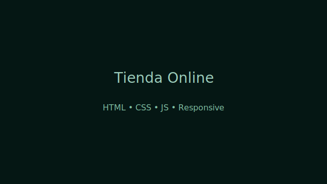

Tienda Online
Simulación de una tienda online creada con HTML, CSS y JavaScript. Características:
- Catálogo de productos y filtros básicos
- Carrito de compra en el cliente (localStorage)
- Diseño responsive y accesible
Se trabajó especialmente la experiencia de usuario y la validación en formularios. Para producción habría que integrar backend seguro y validaciones servidor-side adicionales.